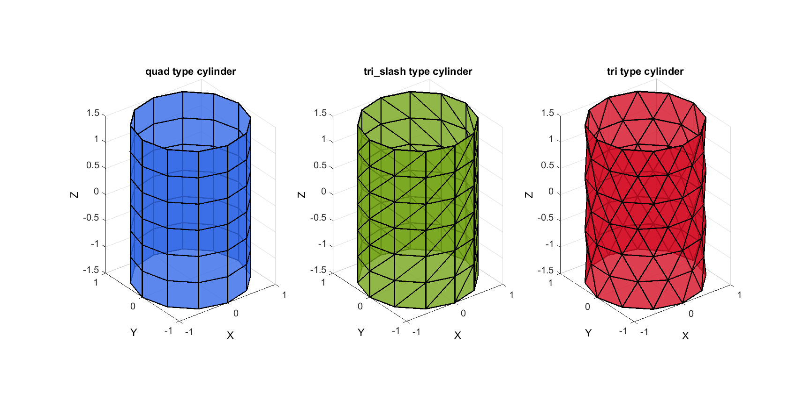

patchcylinder
Below is a demonstration of the features of the patchcylinder function
Contents
Syntax
[F,V]=patchcylinder(r,nr,h,nz,ptype);
Description
Use patchcylinder to generate triangulated spheres with nearly geodesic triangle distributions. The density of the triangulation can be controlled through a particular choice of n (number of mesh refinement steps).
Examples
close all; clc; %clear;
Plot Settings
fontSize=15; faceAlpha=0.8; edgeColor=0.*ones(1,3); edgeWidth=2;
Building a geodesic dome based on the icosahedron
The function inputs are n and r which define the mesh refinement and radius respectively. The mesh refinement number n defines the number of subtriangulation (see function subTri) iterations performed on an icosahedron. Below is a visualisation for n=0:1:3. The function outputs the geodesic dome faces (F) and vertices (V) and also the spherical coordinates of the vertices (Vs) (this output is suppressed in the example below).
%Defining triangulated geodesic domes with different densities r=1; %Cylinder radius nr=12; %Number of elements in the circumferential direction h=3; %height nz=7; %Number of elements in the height direction ptypes={'quad','tri_slash','tri'}; %Patch Types pColors=gjet(numel(ptypes)); cFigure; for q=1:1:numel(ptypes); [F,V]=patchcylinder(r,nr,h,nz,ptypes{q}); subplot(1,3,q); hold on; title([ptypes{q},' type cylinder'],'FontSize',fontSize,'Interpreter','none'); xlabel('X','FontSize',fontSize); ylabel('Y','FontSize',fontSize); zlabel('Z','FontSize',fontSize); patch('Faces',F,'Vertices',V,'FaceColor',pColors(q,:),'FaceAlpha',faceAlpha,'lineWidth',edgeWidth,'edgeColor',edgeColor); % patchNormPlot(F,V); set(gca,'FontSize',fontSize); view(3); axis tight; axis equal; grid on; end

GIBBON www.gibboncode.org
Kevin Mattheus Moerman, gibbon.toolbox@gmail.com